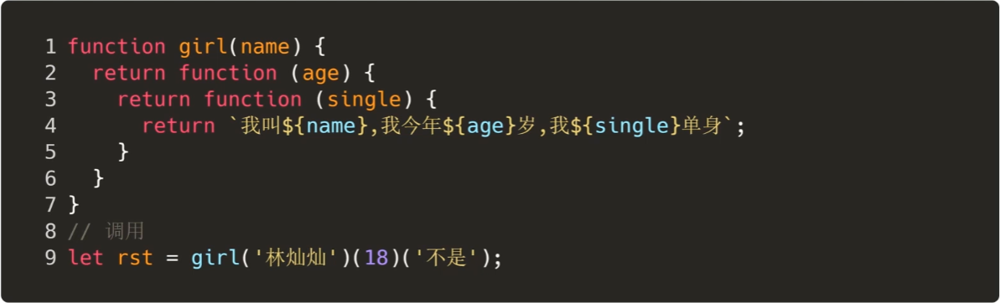
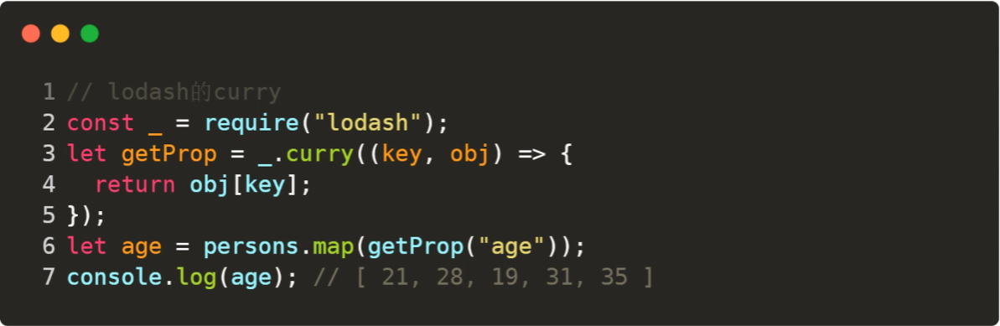

函数相关
compose函数和pipe函数
函数组合，将多个函数组合在一起。
compose函数
- 将需要嵌套执行的函数平铺
- 嵌套执行指的是，一个函数的返回值作为另一个函数的参数
compose 函数主要是实现了函数式编程中的 pointfree ，使我们专注于转换而不是数据本身。
也就是说，我们可以把数据处理的过程，定义成一种与参数无关合成运算。不需要关注参数本身，只需要将运算合成即可。
pointfree 就是不使用所要处理的值，只合成运算过程。即无参数分隔。
let compose = function () {
// 将arguments转为数组
let args = [].slice.call(arguments)
return function (params) {
// 自右向左，依次执行
return args.reduceRight(function (res, cb) {
return cb(res)
}, params)
}
}
es6版：
const compost = (...args) => params => args.reduceRight((res, cb) => cb(res), params)
Redux就是依赖compose来实现中间件的功能的。
Webpack的loader也是。
pipe函数
pipe就是compose的复制版，只不过执行方向变了，改为从左向右
export default function Pipe(...funcs) {
return params => funcs.reduce((res, cb) => cb(res), params)
}
常用函数
memozition
将上次的计算结果缓存起来，当下次调用时，如果遇到了相同的参数，就直接返回缓存中的数据
原理：
将参数和对应结果存储到一个对象中，调用时，先判断参数对应的数据是否存在，如果存在则直接返回，如果不存在才计算并存到缓存中。
闭包的灵魂体现！
lodash中的memoize实现：
// func是需要缓存的函数，resolver是计算key的函数
function memoize(func, resolver) {
// 类型校验
if (typeof func !== 'function' || (resolver != null && typeof resolver !== 'function')) {
throw new TypeError('Expected a function')
}
const memoized = function(...args) {
// 先计算一下key，如果没有计算函数，则取第一个参数
const key = resolver ? resolver.apply(this, args) : args[0]
// 取缓存
const cache = memoized.cache
// 如果缓存中有值，则直接返回
if (cache.has(key)) {
return cache.get(key)
}
// 缓存中没有值，先计算，再放入缓存中，再更新缓存
const result = func.apply(this, args)
memoized.cache = cache.set(key, result) || cache
return result
}
// 缓存初始化为Map
memoized.cache = new (memoize.Cache || Map)
// 返回缓存函数
return memoized
}
memoize.Cache = Map
export default memoize
使用场景：
需要大量重复计算或依赖之前的结果的情况
比如斐波那契数列
curry
将使用多个参数的一个函数，转化成一系列使用一个参数的函数的技术。

比如，使用正则校验一个字符串：

或者从对象数组中取某一个字符的值

在调用 getProp("age") 之后，这个的返回值，就变成了接受一个对象并返回对象的 age 属性的函数，放在map中就很舒服了。
偏函数
如果说，柯里化是将一个多参数函数转换成多个单参数函数，也就是将一个n元函数转换成n个一元函数。
那么偏函数就是固定一个函数的一个或者多个参数，也就是将一个n元函数转换成一个n-x元函数。
也就是：
柯里化： f(a,b,c) => f(a)(b)(c)
偏函数： f(a,b,c) => f(a,b)(c)
可以简单实用bind来实现
let add = (x, y) => x + y;
let rst = add.bind(null, 1);
rst(2); // 3